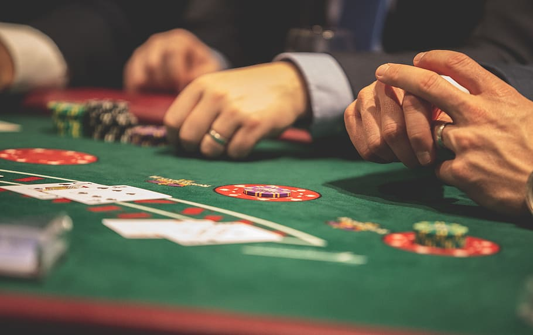

Jordans-Portfolio
Examples of previous projects
Project 1: BlackJack 21 Game: Description
- This is a game where you play against the dealer and try to get the higher values of cards without exceeding over the number 21. If your cards ever equal a total of 21, you automatically get blackjack (win) unless both you and the dealer get 21 then you push (tie). The user also has a cash balance that is wagered based on winning or losing, the user must keep their cash balance positive and not negative to keep playing.

Project 2: Junk File Cleaner for Windows: Description
- This is used as a python script that I use for my computer. This script is set to automatically run everyday at 1:30pm, once running the script will open a pre-installed cleaning program that is on every windows PC and then open two other junk folders inside of windows to clean up.